i have no idea what counts as "on-topic" and what counts as "off-topic"
there's just so many things i think are worth writing about
luxury is wasted on me
preamble
If you're familiar with me, you know I'm a simple man.
It really doesn't take much to make me happy.
I always tweak out about wanting internships for the money,
but in reality I rarely have any uses for it in terms of leisure.
Besides eating out with friends and sustaining my boba addiction,
I don't find pleasure in buying things like designer brands or fancy cars
or whatever the bourgeois get these days.
Sure, I may have a couple of big-ticket figurines and Lego sets,
but I'm legit running out of places to put them;
at a certain point I literally will not be able to buy anymore
without selling what's already in my room.
In fact, sometimes if you offer me something most people would
be overjoyed at, I might get overloaded and not actually like it that much.
The below experience in Shanghai is (somewhat) proof of that.
where the hell did you go kevin
Over in Shanghai, my aunt & cousin invited me over to do some weird resort experience with them.
I'm really not sure how to describe this other than just telling you directly what happened over there.
I guess, TLDR, it's just a one-day thing where they give you a bunch of ways to relax?
There's a buffet, a pool, karaoke, game rooms, etc. etc.
A quick disclaimer before I begin: there will be photos, and they will be hideous.
I do apologize for that, but no one said this was a travel blog.
actual stuff start!
It's always nice when a place makes a good first impression,
and the lobby of this location didn't disappoint:
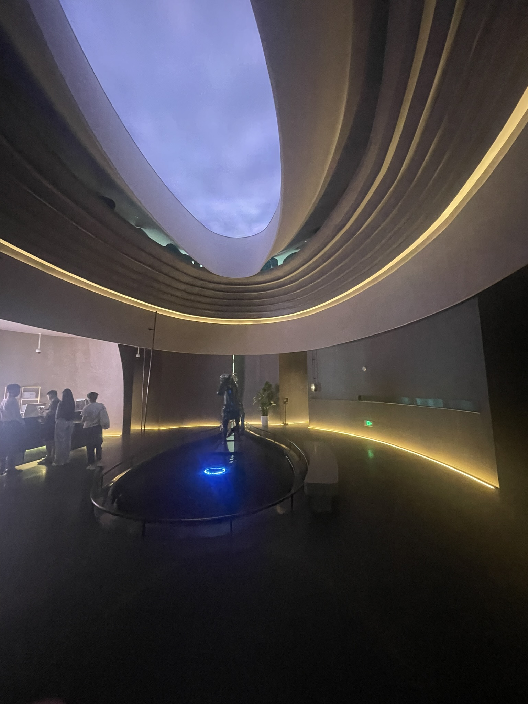
i wonder if the horse is anatomically accurate
We checked in and they gave us these little wooden bead bracelets
with a tag attached to them before directing us to the locker rooms.
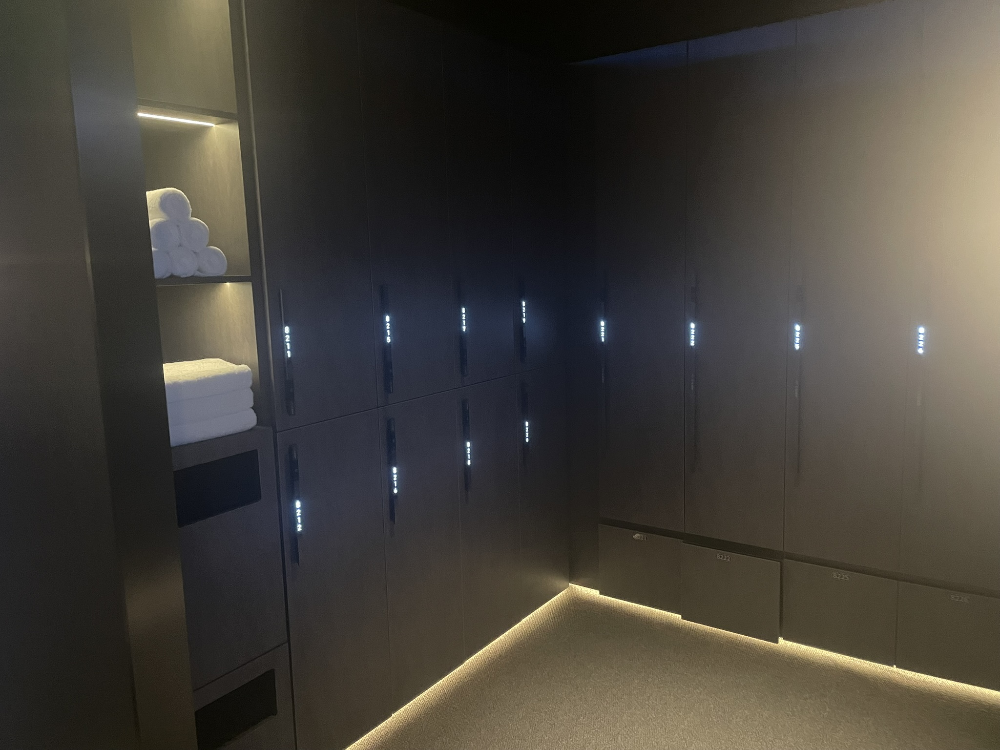
god, even the lockers goes hard
How they work is that you put the tag up to its associated locker number and it unlocks.
I was originally just going to throw my swimming stuff in there and call it a day,
but they said I had to switch into their clothes.
Weird, but sure.
I looked at their fit, and it was a loose-fitting white shirt that hung particularly low around the sides
along with a light brown pair of long pants with the stretchiest waistband I've ever seen.
We were also told to take our shoes off and put on slippers instead.
Not the best in terms of comfort, but it is what it is.
When I walked out the locker room there was a guy, buck naked, drying his hair in front of the mirror.
Honestly, based- I could never imagine doing something like that.
I always try to remain immodest for the shortest amount of time necessary when changing.
let em eat cake, or something
We arrived at noon, so lunch was the first order of the day.
Have this video of the initial entrance to the buffet:
I'm someone who always appreciates a good water feature, and the waterfall wall here was no exception.
Nearly every single guest was dressed in the same garb I got.
This was except for the children, who got a colored shirt with little dolphins or flowers
running every which way across the fabric.
I, the weirdo that I am, thought this reminded me of a cult about to drink the Kool-aid,
or some weird White Lotus stuff (despite me never having watched the show).
I'm not exactly sure how to describe the buffet given the mountain of photos I took,
so I'll just dump them all here and let the captions do the talking.
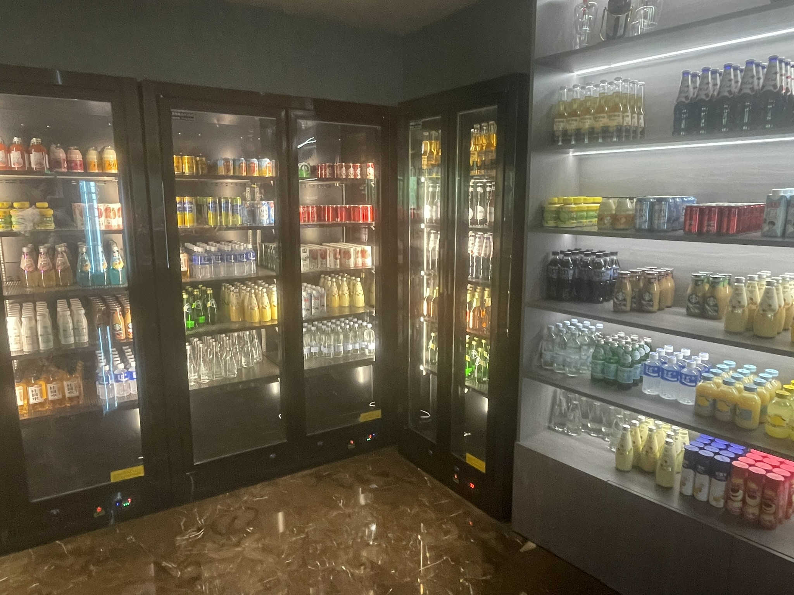
holy hell they have so many drinks- not shown but there's even starbucks frappucinos
decided to try whatever this mango milk was, it seemed cool
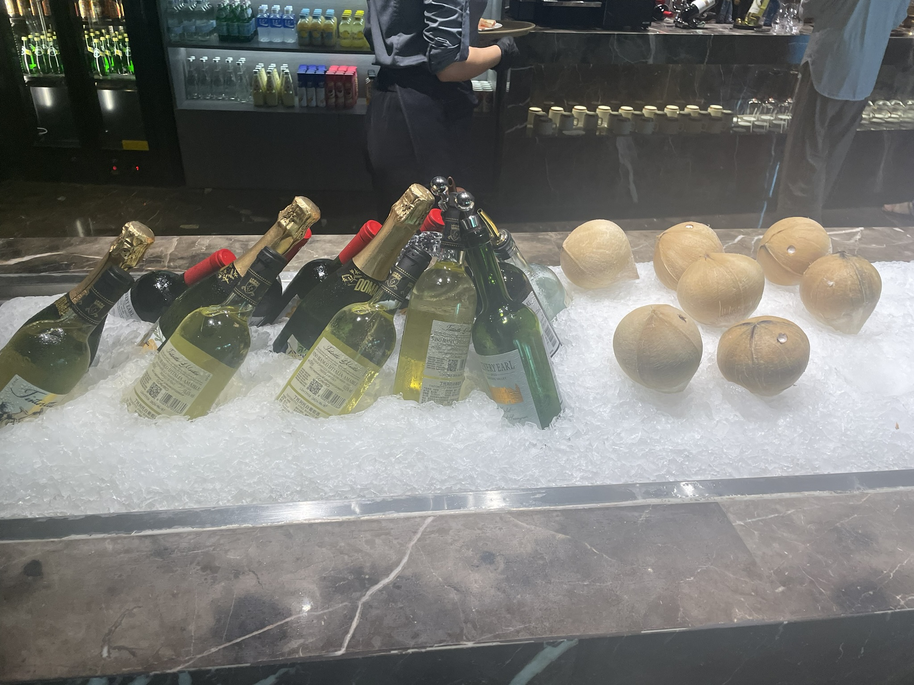
drinking age in china is 18 hahahahahaha- oh what the hell, are those coconuts to the side??
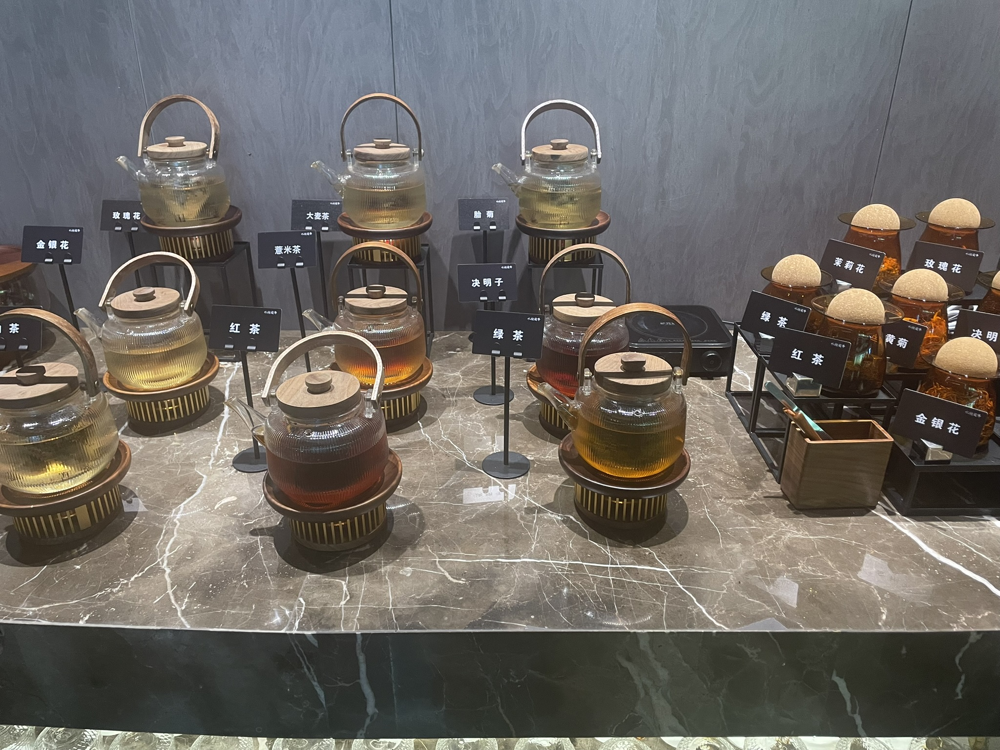
this is the one part of the buffet that i believe i appreciate in full capacity
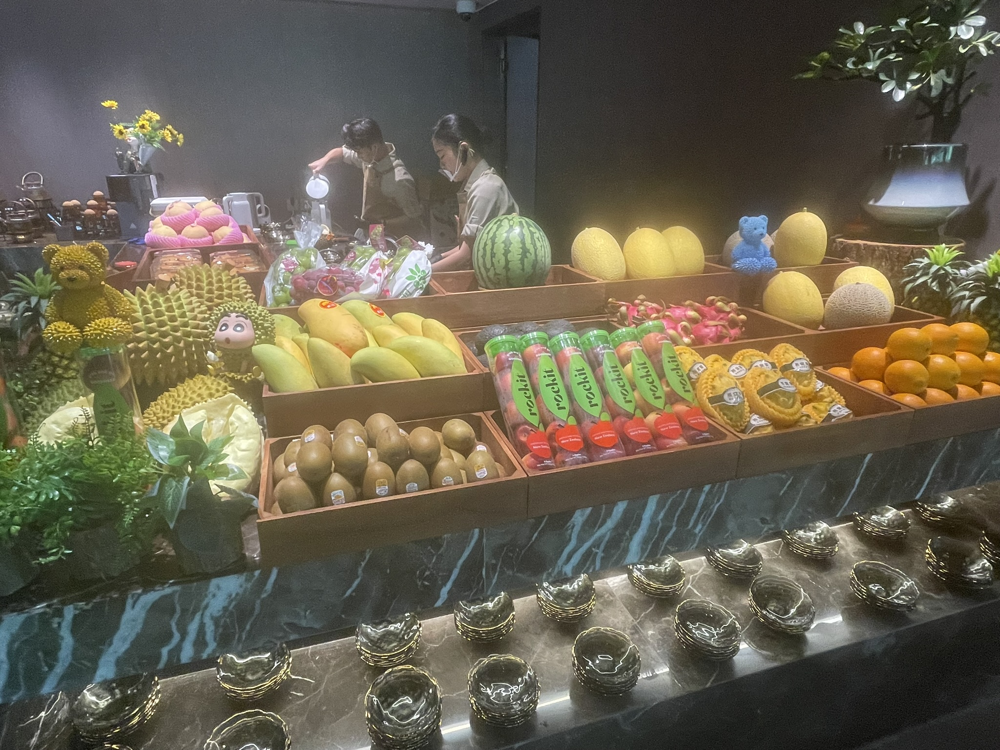
i hate durians
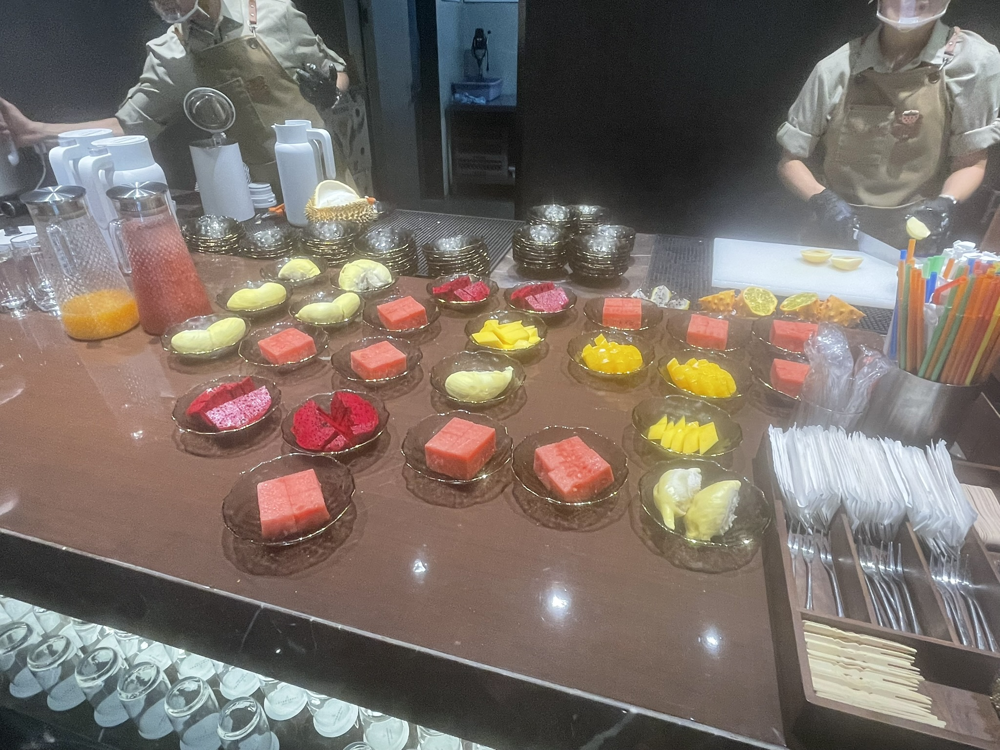
you could ask the service workers and they'll just cut the fruit and serve it right to you!
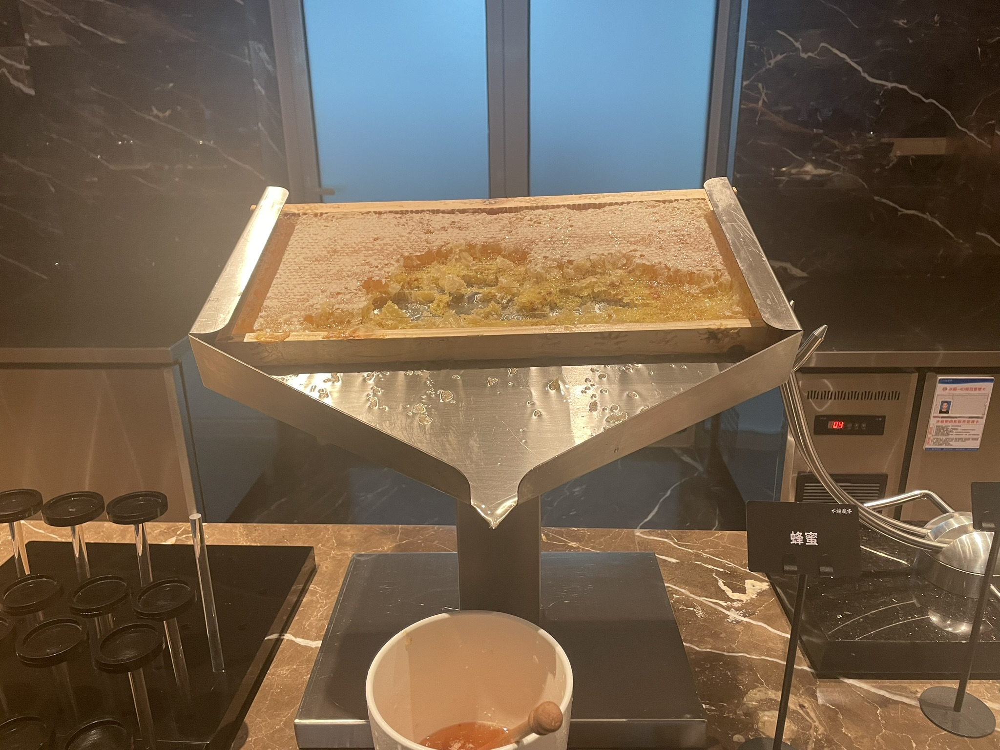
so, am i supposed to like, eat the honey comb? or the honey that's dripping out?
THEY HAVE THE THING OH MY GOD I'VE ONLY SEEN THIS IN PICTURES
japanese cheesecake- not that good tbh
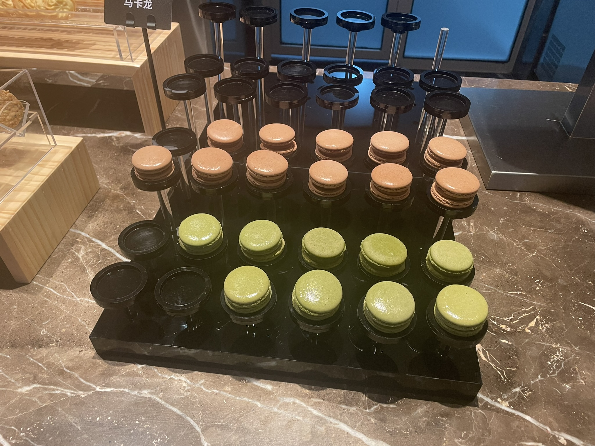
i prefer my macarons cold, maybe that's why these didn't really meet expectations
That's enough photos for now, I'm sure you get the idea.
Back in the states, I would constantly complain about the price of everything.
Fruit, drinks, dishes, you name it.
Put me in front of all these delicacies for free, and I freeze up immediately.
Maybe it's my very limited stomach capacity speaking, or maybe it's indecision.
No clue.
I headed back to the table with a bowl of rice, some green beans, some green beans, and a lamb chop:
a simple selection given the elaborate sashimi, raw shrimp (or does that also count as sashimi?),
and exotic fruits my family had taken.
At their insistence, I tried a bit.
It was fine, I guess... no real appeal other than the fact that it was supposed to be expensive.
On my morbillionth stroll around the place to see if some new food had magically appeared for me to eat,
I heard a child complain to his parents about the lack 小笼包
(pork buns, y'know, the things they have for a the price of a kidney at din tai feng).
Mood.
Who cares about the fancy fare when the normal food is just as good, if not better?
whatever in the afternoon
Right after lunch, we hit the pool.
Something I found really nice was that they had a fridge for drinks right next to the pool.
Yeah, I can be bought with food pretty damn easily.
The main condition of this hotel's water features was this "storm experience" type thing.
It was a hot tub of sorts with a button that started a "storm".
Basically, room would go dark and water would start falling from the ceiling to simulate rain for a while,
which is about as exciting as it sounds.
the hell kinda pose you want me to make?
After I got my photo and started swimming laps in the pool, I went back to the hot tub to take a look.
Despite having capacity for at least ten people,
everyone was lining up and going in one at a time for goddamn photos.
Instead of actually, y'know, relaxing, people were flicking their hair back
and making all kinds of graceful poses for their camera lenses.
Is there a moral to this anecdote?
Hell if I know, it's not like this is English class.
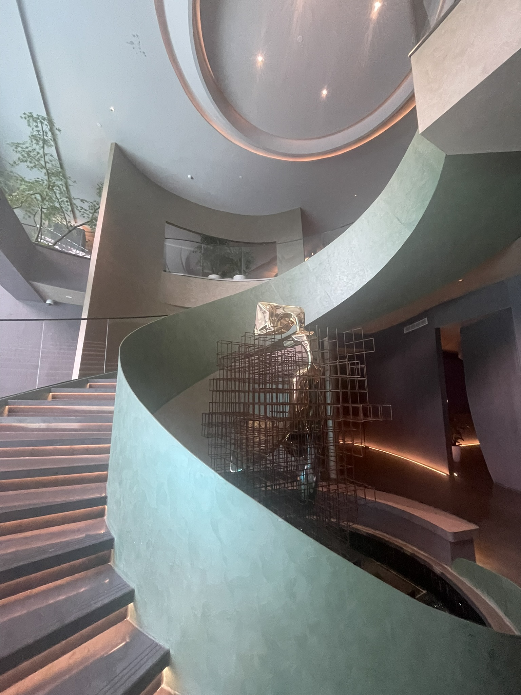
i can always appreciate good architecture, though.
this spiral staircase next to the pool goes kinda hard.
We all got tired of swimming after a couple hours and went to the common sleeping area.
Note that this is different from a hotel room!
That place was a first-come-first-serve set of lounge chairs with eye masks,
ear plugs, and a TVs attached so one can rot at quick as possible.
All but two of them were occupied.
I quickly nabbed one and laid my bag on the other one to claim it for my aunt.
Since I was still jet-lagged as hell, I took a three-hour long nap and woke up
feeling like goddamn Rip van Winkle.
Just like that, it was time for dinner.
thank god, dinnertime
Yeah, first take this photodump:
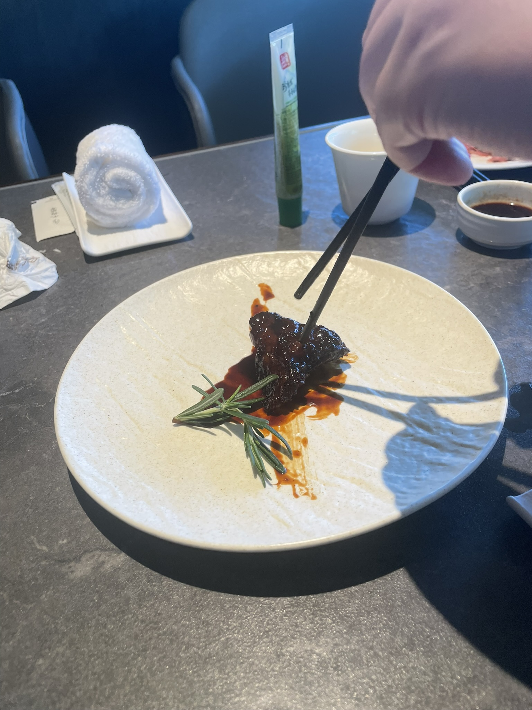
gotta love the massive plate with the one (1) bite of steak on it
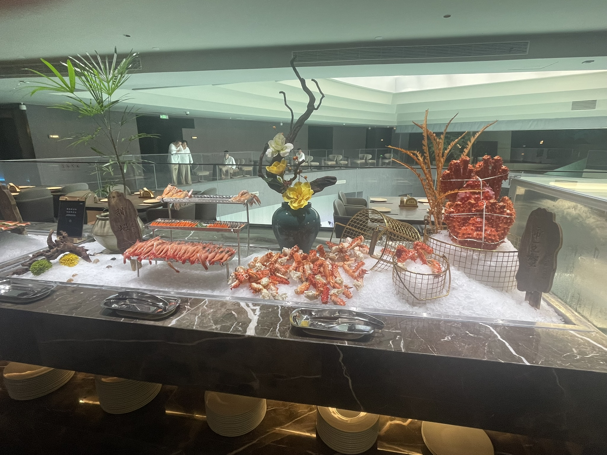
never really liked shellfish...
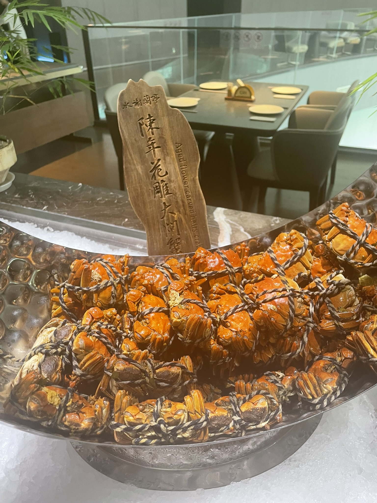
how would one even go about eating these
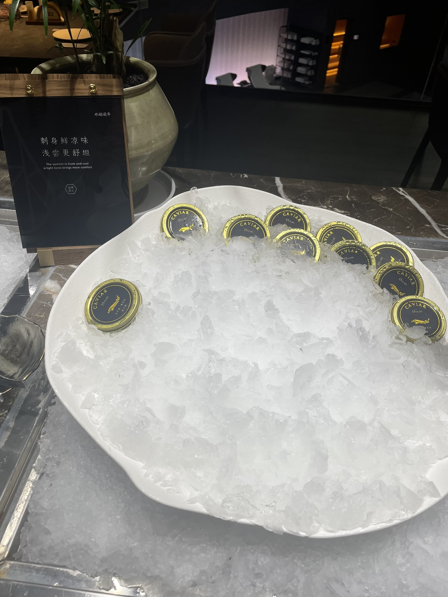
THIS ISN'T EVEN THE ORANGE ONE, THIS IS BLACK CAVIAR
But I do have to spend a bit of time on the caviar.
Isn't that stuff supposed to sell for thousands of US dollars a pop?
Why are they putting it in an all-you-can-eat?
By sheer coincidence, I'd just finished reading McMafia a couple weeks ago.
In one chapter, the author chronicles how black caviar is harvested by slaughtering sturgeons to the point of near-extinction.
The book was published around 2005, so maybe, just maybe
humanity managed to figure out a more sustainable way to get caviar?
I doubt it.
I know individual choices don't really matter, but I didn't get any,
even as the others in my family chowed down only to say how it didn't really taste like much.
This time, on a trip around the buffet, I saw two women walking along the buffet layout
hovering a phone across each item.
However, my confusion was immediately dispelled when I heard them plugging the food.
They were streamers!
Perhaps they were part of the resort's PR department or just some folks desperate for internet clout,
but it was a fun thing to see.
When I came back I saw my cousin had grabbed two bottles of that stupid "artesian water".
One from Evian, which is what the schmucks who buy this are spelled backwards.
Another was from some New Zealand water company.
I wouldn't be surprised if they were owned by Nestle or whatever.
These bottles were glass and everything;
I lowkey felt guilty when I was done and threw them out.
As for the taste, it wasn't any better than a plastic bottle of Kirkland
or even just water you can boil at home like a normal person.
Remind me to laugh at the schmucks that fall for whatever "water in a fancy container"
scam Whole Foods decides to peddle next time I see them.
yeah that's it
With dinner done, we hailed a cab back.
Laying on my cousin's shoulder, I struggled to stay awake for the hour-long car ride.
For those who for some reason trust me to give a rating on tourist destinations,
I'd say this place is a fine use of your money.
Again, luxury is just kinda wasted on me, so I can't really appreciate
this place in its full capacity.